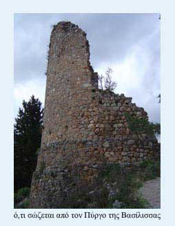

Βυζαντινές οχυρώσεις
 Δύο στρογγυλοί πύργοι στο εσωτερικό του κάστρου είναι τα μόνα απομεινάρια από τα βυζαντινά χρόνια. Ο καλύτερα διατηρημένος φέρει το όνομα «Πύργος της Βασίλισσας». Στο «Χρονικό του Γαλαξειδίου», μοναδικό ιστορικό τεκμήριο της εποχής, αναφέρεται ότι το 996 μ.Χ. το κάστρο των Σαλώνων λεηλατήθηκε, ταυτόχρονα με το κάστρο του Γαλαξιδιού, από το Βούλγαρο τσάρο Σαμουήλ και όσοι είχαν αναζητήσει εκεί προστασία «επεράσασι από σπαθίου και μαχαιρίου…». | ||